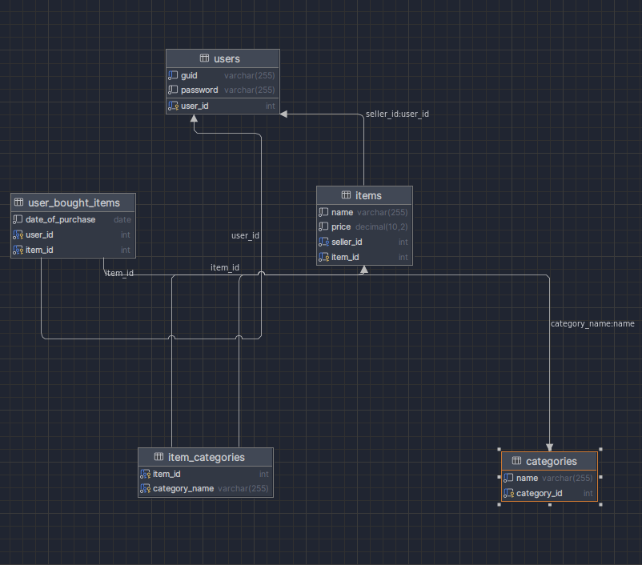

Backend
Frontend
Docs
Database schema diagram
Database schema SQL
CREATE TABLE users
(
user_id INT AUTO_INCREMENT PRIMARY KEY,
guid VARCHAR(255) NOT NULL UNIQUE,
password VARCHAR(255) NOT NULL
);
CREATE TABLE categories
(
category_id INT AUTO_INCREMENT PRIMARY KEY,
name VARCHAR(255) UNIQUE NOT NULL
);
CREATE TABLE items
(
item_id INT AUTO_INCREMENT PRIMARY KEY,
name VARCHAR(255) NOT NULL,
price DECIMAL(10, 2) NOT NULL,
seller_id INT NOT NULL,
FOREIGN KEY (seller_id) REFERENCES users (user_id)
);
CREATE TABLE item_categories
(
item_id INT NOT NULL,
category_name VARCHAR(255) NOT NULL,
PRIMARY KEY (item_id, category_name),
FOREIGN KEY (item_id) REFERENCES items (item_id),
FOREIGN KEY (category_name) REFERENCES categories (name)
);
CREATE TABLE user_bought_items
(
user_id INT NOT NULL,
item_id INT NOT NULL,
date_of_purchase DATE NOT NULL,
PRIMARY KEY (user_id, item_id),
FOREIGN KEY (user_id) REFERENCES users (user_id),
FOREIGN KEY (item_id) REFERENCES items (item_id)
);
CREATE INDEX idx_item_categories_item_id ON item_categories (item_id);
CREATE INDEX idx_item_categories_category_name ON item_categories (category_name);
CREATE INDEX idx_user_bought_items_item_id ON user_bought_items (item_id);
Database schema description
The users table stores information about users who register in the system. Each user is assigned a unique user_id and has a guid and password.
Items for sale are recorded in the items table. Each item has an item_id, a name, a price, and is linked to a seller through seller_id, which references the user_id in the users table.
The categories table holds different categories that can be associated with items. Each category has a unique category_id and a name.
The item_categories table defines the relationship between items and categories. It links each item_id with a category_name, indicating which categories each item belongs to.
The user_bought_items table tracks purchases. It records each purchase with the user_id of the buyer, the item_id of the purchased item, and the date_of_purchase.
Indexes on the item_id in the item_categories and user_bought_items tables, as well as the category_name in the item_categories table, are created for efficient querying.